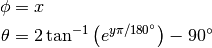

Bases: astropy.modeling.projections.Pix2SkyProjection, astropy.modeling.projections.Cylindrical
MER: Mercator - pixel to sky.

Attributes Summary
Methods Summary
Attributes Documentation
Methods Documentation